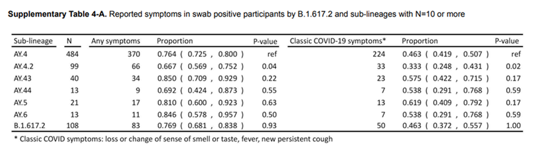
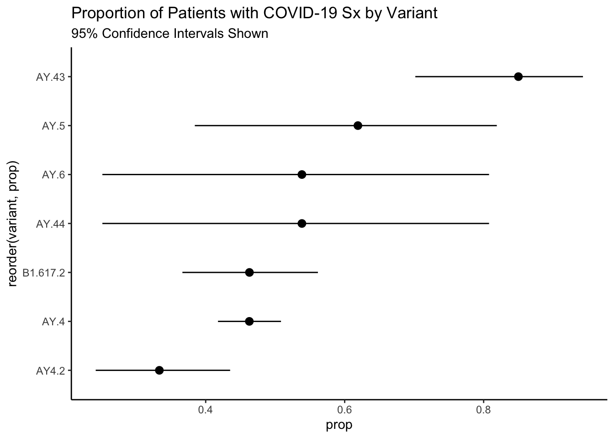

![]()
suppressPackageStartupMessages(library(tidyverse))
library(brms)
sx <- tribble(
~"variant", ~"sx", ~"n",
"AY.4", 224, 484,
"AY4.2", 33, 99,
"AY.43", 34, 40,
"AY.44", 7, 13,
"AY.5", 13, 21,
"AY.6", 7, 13,
"B1.617.2", 50, 108
) %>%
mutate(variant_use = gsub(pattern = "\\.", "_", variant)) %>%
group_by(variant_use) %>%
nest() %>%
mutate(ci = map(data, ~broom::tidy(
PropCIs::exactci(.x$sx, .x$n, conf.level = .95)))) %>%
unnest(cols = c(data, ci))A colleague sent me the following table from a report from the UK REACT Survey:

The argument being made was that those persons who were infected with the AY4.2 variant were less likely to present with traditional COVID-19-like symptoms. This is problematic for a variety of reasons, mainly that we have been told for months what to look for as far as symptomology. Additionally, we have protocols in clinics and hospitals to triage patients, especially when testing resources are scarce. There is also a time component – if people don’t exhibit symptoms (that they think are COVID-19) or soon, they may unwittingly transmit the infection.
So Let’s Recreate the Analysis
Just for fun, I think it would be nice to re-analyze these data. I’ll make them here:
As always, it is a good practice to graph the data. I have added some exact confidence intervals as well given the large differences in sample size amongst the variants.
sx$prop <- with(sx, sx/n)
sx %>%
ggplot(aes(reorder(variant,prop)))+
geom_pointrange(aes(y = prop, ymin = conf.low, ymax = conf.high))+
theme_classic()+
coord_flip()+
labs(
title = "Proportion of Patients with COVID-19 Sx by Variant",
subtitle = "95% Confidence Intervals Shown"
)
Frequentist Approach
Now we can model this using the MLE frequentist approach. Note the fancy binomial syntax given that we are looking at successes, here defined as having COVID-19 like symptoms, out of those testing positive.
We can then use the emmeans package to look at the contrasts.
fit <- glm(cbind(sx, n) ~ variant, data = sx, family = binomial())
library(emmeans)
o <- emmeans(fit, "variant", type = "response")
pwpm(o, diffs = TRUE) AY.4 AY.43 AY.44 AY.5 AY.6 AY4.2 B1.617.2
AY.4 [0.316] 0.1731 0.9999 0.9847 0.9999 0.7360 1.0000
AY.43 0.544 [0.459] 0.9767 0.9894 0.9767 0.0382 0.3522
AY.44 0.860 1.579 [0.350] 1.0000 1.0000 0.9660 0.9999
AY.5 0.748 1.373 0.870 [0.382] 1.0000 0.7303 0.9900
AY.6 0.860 1.579 1.000 1.150 [0.350] 0.9660 0.9999
AY4.2 1.388 2.550 1.615 1.857 1.615 [0.250] 0.8766
B1.617.2 1.000 1.836 1.163 1.337 1.163 0.720 [0.316]
Row and column labels: variant
Upper triangle: P values null = 1 adjust = "tukey"
Diagonal: [Estimates] (prob) type = "response"
Lower triangle: Comparisons (odds.ratio) earlier vs. laterWe can see from these contrasts that nothing really stands out. One important line in the printout is the “adjust = tukey”. One issue with multiple hypothesis tests in the frequentist framework is the need to adjust your alpha, or Type 1 error threshold when you do multiple significance tests. The classical adjustment is Bonferroni adjustments, but these are much more conservative than Tukey adjustments. Regardless, the more tests you do in this framework, the higher your threshold is.
Bayesian Hypothesis Testing
One of the many advantages of Bayesian hypothesis testing is that you don’t have to worry about multiple comparisons (there is even a Gelman paper titled something like that). There are spurious findings that can occur (enter Type M and Type S errors rather than Type 1 and Type 2 errors), but by comparing samples from the posterior distribution you can analyze exactly what your research question is.
So we can do this by building a similar model as before:
fit_bayes <- brm(sx | trials(n) ~ variant, data = sx, refresh =0,
family = binomial(), backend = "cmdstanr", file = "local.rds")
summary(fit_bayes)Warning in seq.default(from = 1, len = along - 1): partial argument match of
'len' to 'length.out'Warning in seq.default(to = N - 1, len = N - along): partial argument match of
'len' to 'length.out'Warning in seq.default(len = N): partial argument match of 'len' to 'length.out'Warning in seq.default(along = arg.names): partial argument match of 'along' to
'along.with'Warning in seq.default(len = length(arg.list)): partial argument match of 'len'
to 'length.out'Warning in seq.default(along = perm): partial argument match of 'along' to
'along.with'
Warning in seq.default(along = perm): partial argument match of 'along' to
'along.with'
Warning in seq.default(along = perm): partial argument match of 'along' to
'along.with'
Warning in seq.default(along = perm): partial argument match of 'along' to
'along.with'
Warning in seq.default(along = perm): partial argument match of 'along' to
'along.with'
Warning in seq.default(along = perm): partial argument match of 'along' to
'along.with'
Warning in seq.default(along = perm): partial argument match of 'along' to
'along.with'
Warning in seq.default(along = perm): partial argument match of 'along' to
'along.with'Warning in seq.default(len = ncol(arg.dim)): partial argument match of 'len' to
'length.out'Warning in seq.default(len = N): partial argument match of 'len' to 'length.out'Warning in seq.default(along = arg.names): partial argument match of 'along' to
'along.with'
Warning in seq.default(along = arg.names): partial argument match of 'along' to
'along.with'Warning in seq.default(len = length(arg.names)): partial argument match of 'len'
to 'length.out'Warning in seq.default(along = perm): partial argument match of 'along' to
'along.with' Family: binomial
Links: mu = logit
Formula: sx | trials(n) ~ variant
Data: sx (Number of observations: 7)
Draws: 4 chains, each with iter = 1000; warmup = 0; thin = 1;
total post-warmup draws = 4000
Population-Level Effects:
Estimate Est.Error l-95% CI u-95% CI Rhat Bulk_ESS Tail_ESS
Intercept -0.15 0.09 -0.33 0.03 1.00 4274 3524
variantAY.43 1.95 0.47 1.09 2.95 1.00 3826 2585
variantAY.44 0.31 0.59 -0.83 1.47 1.00 3416 2847
variantAY.5 0.66 0.46 -0.22 1.58 1.00 3511 2850
variantAY.6 0.32 0.59 -0.84 1.48 1.00 3499 3113
variantAY4.2 -0.55 0.24 -1.01 -0.08 1.00 3842 2747
variantB1.617.2 -0.00 0.22 -0.43 0.42 1.00 4210 2843
Draws were sampled using sample(hmc). For each parameter, Bulk_ESS
and Tail_ESS are effective sample size measures, and Rhat is the potential
scale reduction factor on split chains (at convergence, Rhat = 1).And now run our hypothesis test. Theoretically, we could have made this a random effects model, but for ease, I won’t.
hypothesis(fit_bayes, "variantAY4.2 < variantB1.617.2")Hypothesis Tests for class b:
Hypothesis Estimate Est.Error CI.Lower CI.Upper Evid.Ratio
1 (variantAY4.2)-(v... < 0 -0.55 0.29 -1.03 -0.07 33.19
Post.Prob Star
1 0.97 *
---
'CI': 90%-CI for one-sided and 95%-CI for two-sided hypotheses.
'*': For one-sided hypotheses, the posterior probability exceeds 95%;
for two-sided hypotheses, the value tested against lies outside the 95%-CI.
Posterior probabilities of point hypotheses assume equal prior probabilities.Now we can see in this framework that there does appear to be evidence of a difference in the fraction of those patients presenting with traditional COVID-19 symptoms!
Reuse
Citation
BibTeX citation:
@online{dewitt2021,
author = {Michael DeWitt},
title = {Advantage of {Bayesian} {Hypothesis} {Testing}},
date = {2021-11-19},
url = {https://michaeldewittjr.com/programming/2021-11-19-advantage-of-bayesian-hypothesis-testing},
langid = {en}
}
For attribution, please cite this work as:
Michael DeWitt. 2021. “Advantage of Bayesian Hypothesis
Testing.” November 19, 2021. https://michaeldewittjr.com/programming/2021-11-19-advantage-of-bayesian-hypothesis-testing.